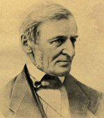
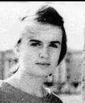
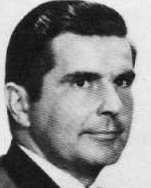
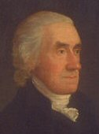
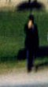

Friday, January the 7th, 2005
back to: title, date or indexes
There are those who make fun of my continuing fascination with the Kennedy assassination—good afternoon, Pansy Cradledew—as if that little pang of excitement I get when I read the words grassy knoll or Umbrella Man or Agent Hosty means I am some kind of bug-eyed conspiracy theorist of questionable personal habits.
Actually I think it is the mountain of theories and documentation and obsessive poring over minutiae that interests me, much as the similar activities of, say, Loch Ness Monster hunters have an inherently attractive monomania. Anyway, for those (and they are legion) who like this sort of thing, here is a Kennedy Assassination Fact.
In November 1963, Lee Harvey Oswald's wife Marina, and the two children, were staying in the house of Ruth Paine, a Quaker, in the suburb of Irving. Oswald stayed in a Dallas rooming-house during the week and joined them at weekends. He kept his Mannlicher Carcano rifle in Ruth Paine's garage. Blah blah blah. The interesting fact is as follows. Ruth's husband Michael Paine (who had moved out of the house for reasons unrelated to the Oswalds) was the great-great-grandson of Ralph Waldo Emerson and also a direct descendant of one of the signatories of the Declaration of Independence, Robert Treat Paine.
I am really glad to know that smidgeon of information, useless as it is. Now you know it too.

Spookily linked by fate : Ralph Waldo Emerson, Marina Oswald, FBI Agent James Hosty, Robert Treat Paine and Umbrella Man.
Hooting Yard on the Air, January the 12th, 2005 : “On Curlews” (starts around 05:26)